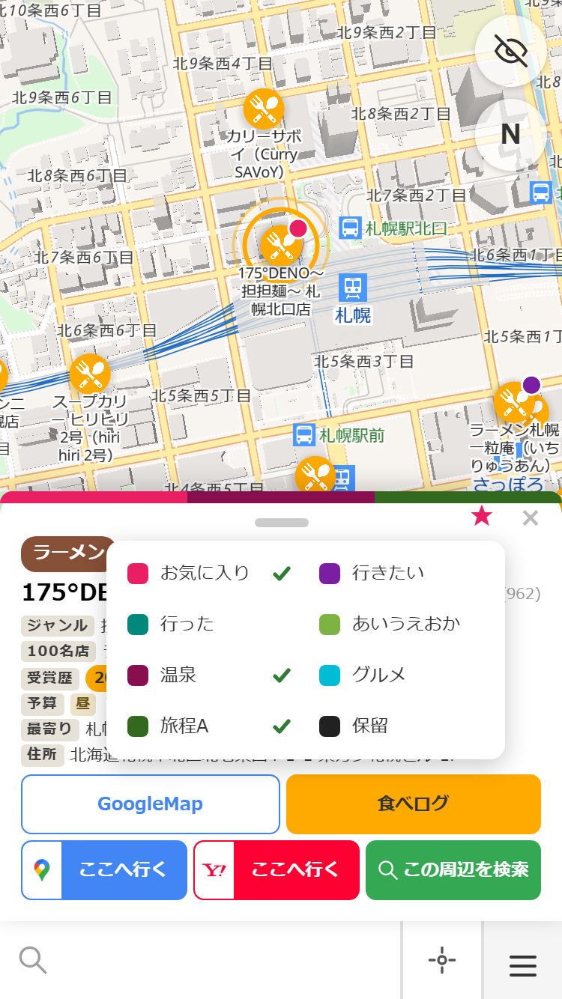
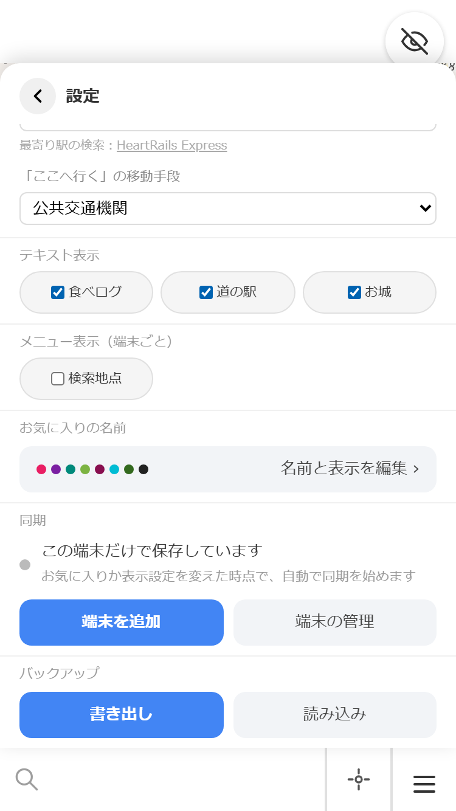
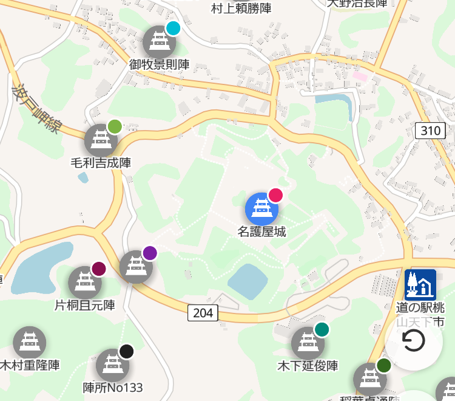
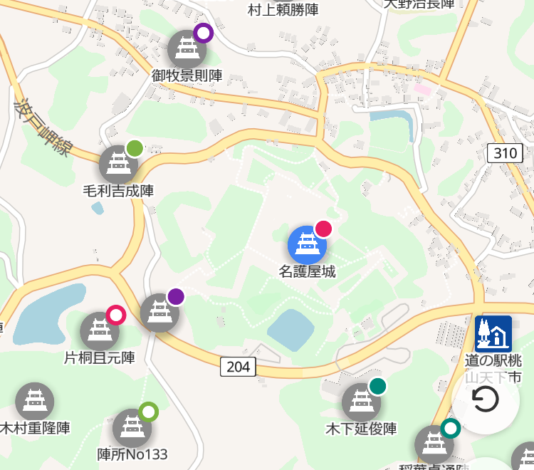
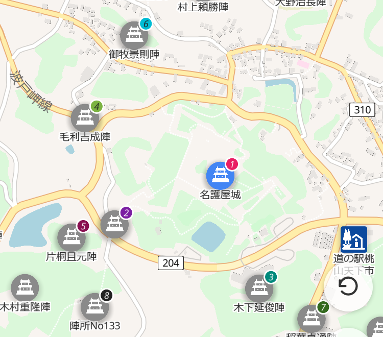
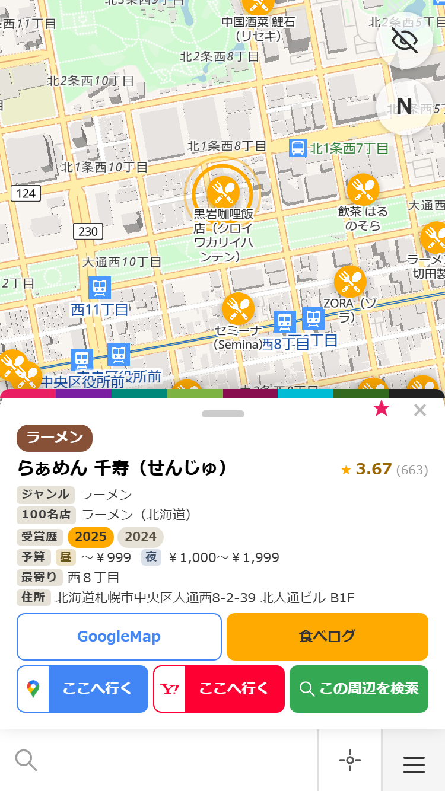

画面はすべて実アプリを iPhone SE3 の 375×667 で開いて撮ったもので、端末枠の中は実寸です（2倍の解像度で撮り、CSS px の寸法で置いています）。
枠を8つに広げたのは撮影のときだけの試作で、FAV_SLOTS と色をページの中で書き足し、5〜8枠のピンのレイヤーも同じ形で足しています。
アプリのコードは変えていません。二段構えと設定の案は、実アプリの部品（.nearby-item・.lords-head・.favname-row・.fxp-btn）をそのまま使って並べ替えています。
撮り直しは python -I mock/fav8-preview/capture8.py . mock/fav8-preview で行えます。
いまの作りのまま8枠にすると、絞り込みのチップが3段になり（名前が6文字なら4段）、一覧の始まりが下がります。 二段構えでは、一段目に枠の一覧を出し、押した枠の中身を二段目に出します。二段目にはチップが無いので、一覧はいまの4枠のときより上から始まります。 「すべて」は一段目のいちばん上に残します（書き出しと選択モードの一括解除が「すべて」か1つの枠かで対象を決めているため）。 選択と書き出しのボタンは二段目にだけ置きます。
| 状態 | チップの高さ | 一覧の始まり（y） | 一覧の高さ |
|---|---|---|---|
| 現行・4枠 | 56px | 272px | 343px |
| 現行のまま8枠（上の画面） | 87px | 303px | 312px |
| 案・二段目 | — | 209px | 406px |
値はすべて上の画面を撮ったときに getBoundingClientRect で計ったものです。
パレットは一覧とは別の部品なので、二段構えにしても大きさは変わりません。いまの1列のままだと高さが282pxになり、シートの「食べログ」などのボタンに重なります。 2列×4段にすると266×146pxで、いまの4枠のパレット（144×146px）と同じ高さに収まります。位置はいまと同じ決め方（★の右端に揃え、下に入れば下へ）のままです。


いまの作りのまま8行にすると、区画の高さは323px（4行のときは163px）になります。 案では、設定には色の点を並べたボタンを1つだけ置き、押した先の画面で名前と「薄く出す」を編集します。押した先の行はいまの行そのままです。 ボタンの形は、同じ設定画面の「同期」「バックアップ」のボタン（高さ38px）に揃えています。



同じ場所（名護屋城の周り、1つの陣に1枠ずつ）を、印の作りだけ変えて実アプリで撮りました。画像は実寸（375×330）です。 枠の位置はどの案でも同じで、名護屋城＝1、名護屋城の左下の紫＝2、木下延俊陣＝3、毛利吉成陣＝4、片桐且元陣＝5、御牧景則陣＝6、稲葉貞通陣（右下）＝7、陣所No133＝8 です。
前の版の案1で7と8が似て見えたのは、色差の計算（CIEDE2000）が大きな色の面どうしを比べる前提の式で、15pxの印の見え方を表していないためです。 計算上は7と8の差は 31.1 あり、8色の中でも離れているほうの組でしたが、小さい印では暗い色どうしがどれも黒っぽく見えます。 印が小さいほど色の違いが見えにくくなることは、可視化の分野の実験（Szafir 2018）でも示されています。 このため、案2・案3も色の計算だけで選び直しましたが、同じ弱点（暗い緑とオリーブ、明るいティールとティール）が残りました。 色だけで8つを見分けさせるのは、いまの地図ではむずかしいと考え、案4・案5では色以外の手がかりを足しています。



| 案 | 見分ける手がかり | 8つの中でいちばん近い組（計算） | 色覚シミュレーションでいちばん近い組 | 一覧の色帯・シートの線 |
|---|---|---|---|---|
| 案1 | 色だけ | 18.4（2と5）※7と8は31.1でも似て見える | 12.6（1と4。いまの4色と同じ） | そのまま使える |
| 案2 | 色だけ | 18.4（3と7） | 4.5（7と8） | そのまま使える |
| 案3 | 色だけ | 15.2（3と7） | 10.1（5と6） | そのまま使える |
| 案4 | 色4つ＋塗りか輪か | 色はいまの4色のまま（27.9） | 12.6（いまの4色と同じ） | 5px幅の帯では輪を描けないため、別の描き方が要る（未検討） |
| 案5 | 色＋番号 | 案1と同じ | 番号で読めるので色に頼らない | 帯と線には番号が入らない（二段構えなら一覧は枠ごとに分かれる） |
色の数値はすべて計算で出したもので、表の値は CIEDE2000（大きいほど離れている）です。 情報シートの上端の線（8等分）と一覧の色帯は、「1. お気に入り一覧」と下の画面に案1の色で出ています。
